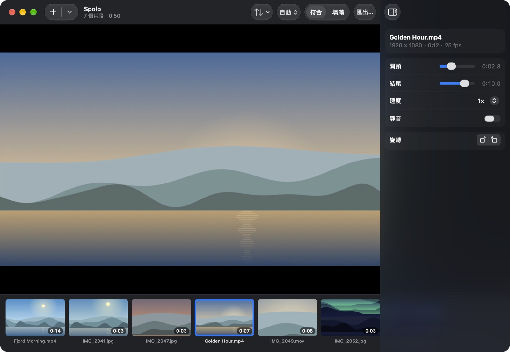

Spolo
照片和影片，合成一部影片。
手機、相機拍的片段，或螢幕錄影，不管什麼比例、什麼格式，拖進來就行。排好順序，剪掉頭尾，在你的 Mac 上匯出一個 MP4 或 MOV。Spole 是挪威語「膠片捲軸」的意思。
平台macOS 14 或以上版本
價格免費，Apache 2.0
網路完全不連網
語言EN, 简体, 繁體

它能做什麼
- 隨意混搭任意比例、任意格式的照片和影片。直拍的手機影片、HDR、沒有聲音的片段，都能正確合成。
- 排好順序拖移排序，或按拍攝日期、檔案名稱、加入順序一鍵排好。
- 每段都能調修剪、調速（聲音不變調）、靜音、旋轉，設定每張照片停留多久。
- 統一畫面自動、16:9、9:16、1:1 或 4:5，加上黑邊或填滿裁切。
- 又快又私密不上傳、沒有浮水印、不限數量。片段一致時直接拼接，不重新編碼。